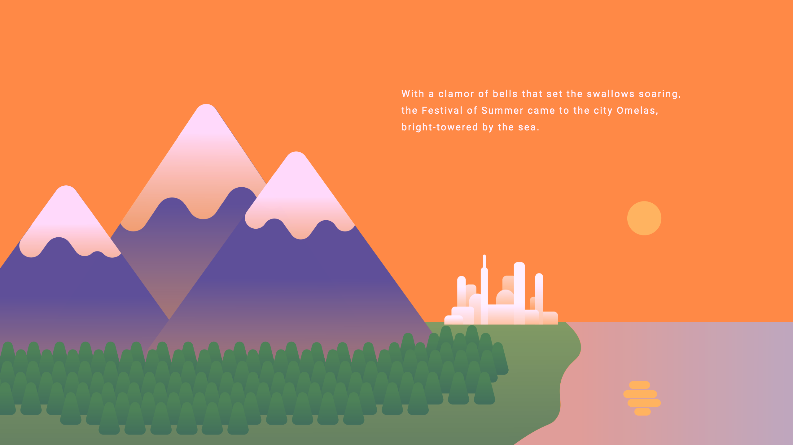
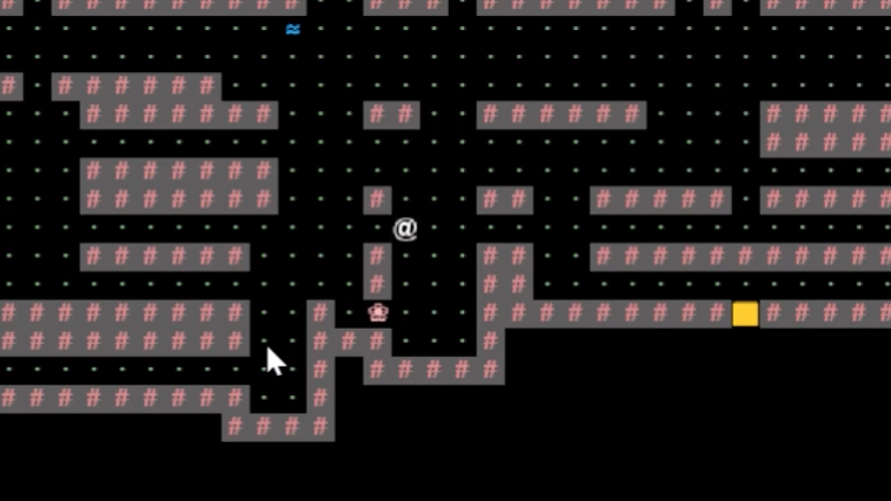
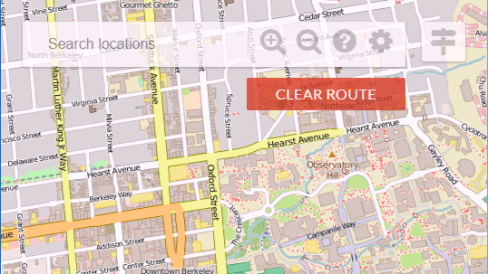
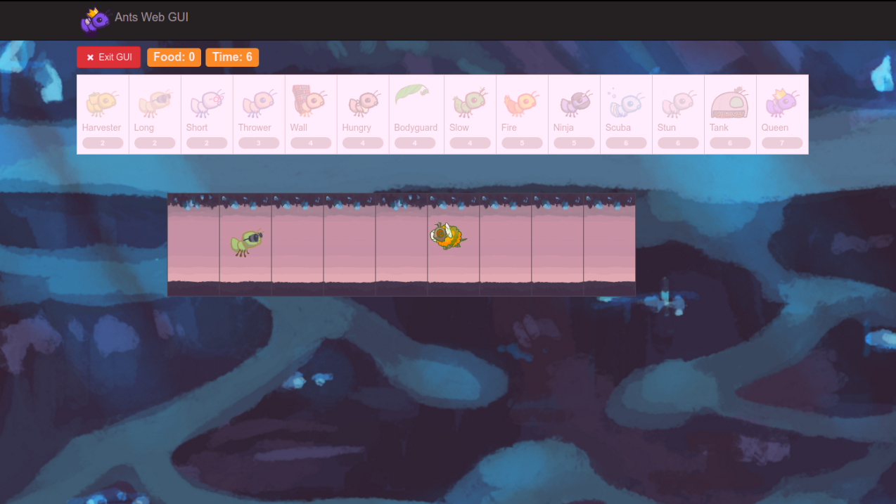

Projects

Welcome To Omelas
I prototyped and made a
,
using Adobe Illustrator and CSS and JavaScript animations to portray
moral choice in a philosophical short story.

KingPin Donuts
I redesigned a bakery website with an
aesthetic, user-friendly menu and an aesthetic layout. I used
Adobe Illustrator to provide appealing pictures of menu items.

Build Your Own World
I implemented a 2-D tile-based world
exploration engine in Java to create a Pacman-like game. I also
added creative rules to enhance gameplay.

BearMaps
I utilized a k-D tree and Java data
structures (priority queues and hash tables) to optimize the
speed of locating points on a map.

Ants vs. SomeBees
I created a tower-defense game similar
to Plants vs. Zombies using object-oriented programming in Python.